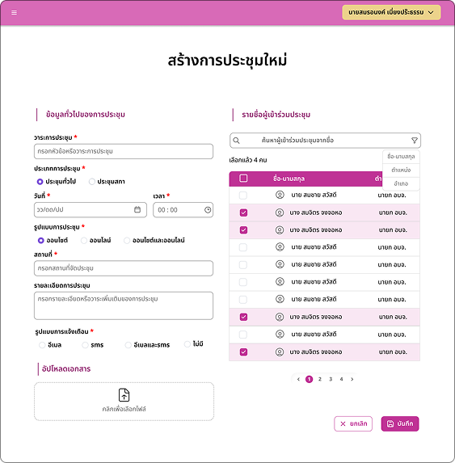
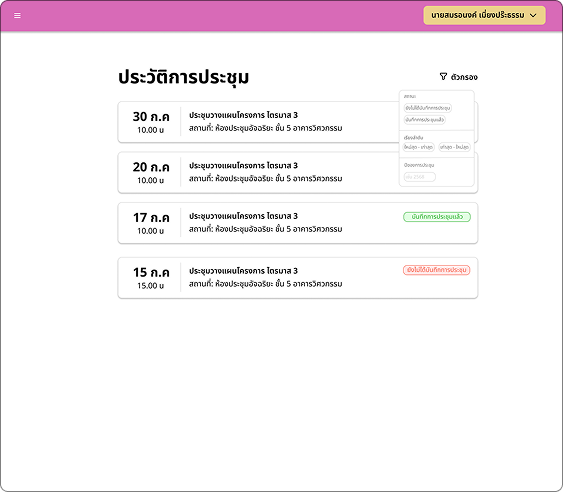
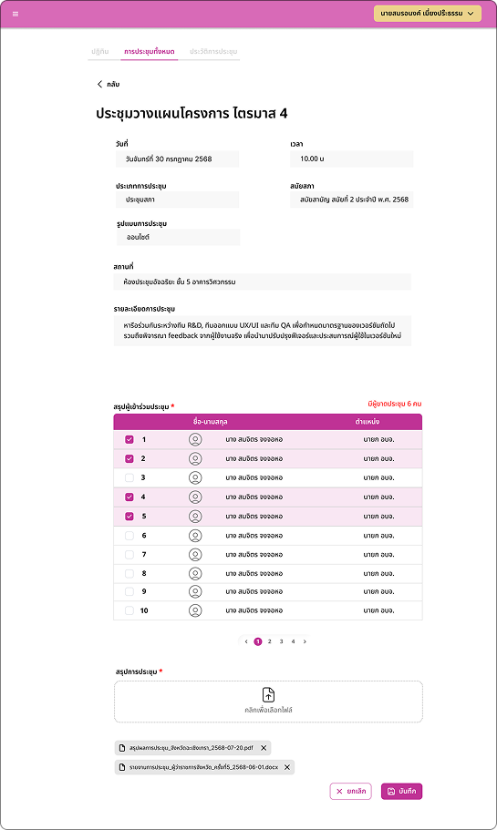

Case study — UX/UI Design & Frontend
Chachoengsao PAO
A custom management website for the Chachoengsao Provincial Administrative Organization — replacing decentralized, manual workflows with a modern system, built directly from requirements gathered with the organization's own officials.

A structured organization, an unstructured workflow.
Despite having a structured organization, the client faced operational inefficiencies caused by decentralized, manual processes. The system was designed for an internal user base of roughly 38 staff members, with 3 secretaries as the primary daily users.
Complex data management
Personnel records, including the history of Royal Decorations (เครื่องราชอิสริยาภรณ์), were tracked manually. There was no easy way to filter staff by Position or Group, making the process error-prone and slow.
Meeting chaos
Meeting coordination relied on informal channels like Line, which senior officials often overlooked. This led to missed meetings, scheduling conflicts, and no reliable way to audit past meeting evidence.
Opaque approval process
Document requests relied on physical paper trails. Staff had no way to check whether a request was "Pending" or "Rejected" without asking in person.
UX/UI Designer & Frontend — Meeting Management Module
This was a team project: an 8-person group split into PM+UX/UI (1), UX/UI & Frontend (3), Backend (2), and Deploy & Testing (2). Within the 3-person UX/UI & Frontend team, each person owned a module end-to-end. I owned the Meeting Management Module — design and frontend implementation — while my two teammates owned Document Management and Personnel Data respectively.
- PM + UX/UI — 1 person
- UX/UI & Frontend — 3 people, one module each: Meeting (me), Document, Personnel
- Backend — 2 people
- Deploy & Testing — 2 people
Design ownership
Designed the full meeting workflow end-to-end, from creation to the "Meeting Evidence" upload flow, based on direct consultation with PAO staff.
Cross-module collaboration
Worked with my Personnel Data teammate to pull attendee lists from the Personnel Database, and with Backend to define notification and permission logic.
Frontend implementation
Built the Meeting module's interface in React and Tailwind CSS, within the shared frontend codebase.
Two insights from talking to the people who'd actually use it.
Since this is an internal system, my research focused on direct consultation with the client. I interviewed staff to understand their actual workflow, which surfaced two key pain points.
Senior officials don't check Line regularly
Line invites sat unopened. Staff explained that this demographic pays far more attention to SMS, treating it as a direct and urgent alert, while Line notifications are easy to mute or ignore.
Meeting summaries lived on paper
There was no centralized digital archive. During audits, staff wasted hours digging through physical folders to find evidence of past meetings.
A design decision, not a default
My first instinct was to build notifications on Line — it's the tool everyone already uses, and the more "modern" integration. But the research pointed the other way: the tool people use daily wasn't the tool they acted on for anything official. I tested this assumption directly with the client before committing, and confirmed that senior officials treat SMS as the higher-priority channel.
This wasn't a free win, though. SMS has a real cost per message and no rich formatting, unlike a free Line message. I accepted that trade-off because the recipient group was small and well-defined (staff and officials), so guaranteed visibility mattered more than message richness or cost at that scale.
From an informal Line message to a logged, notified meeting.
A meeting got scheduled through an informal Line message to attendees — no confirmation, and no record kept anywhere once the message scrolled out of view.
The admin creates the meeting in the system → the system automatically sends an SMS to every attendee → attendance and evidence get logged and archived in one place.
Two systems doing the heavy lifting.
Appointment & SMS dispatch
I designed a comprehensive Meeting Creation Form that captures all essential details (Topic, Time, Attendees), with attendees pulled directly from the Personnel Database rather than typed manually. Upon submission, the system automatically triggers an SMS notification to all participants — ensuring high-priority invites reach senior officials immediately, bypassing the noise of chat apps.
The key design decision here was turning notification into a guaranteed side effect of saving a meeting, rather than a separate manual step. The admin doesn't send an invite — they create a meeting, and the system ensures everyone is notified as part of that single action.
Meeting history function
A centralized history log lets users view past meetings and retrieve evidence. To protect data integrity and prevent tampering, I designed a role-based permission structure.
Restricting Edit and Delete to Admins only was a deliberate design decision to preserve an accurate, tamper-proof audit trail — not just a technical access-control setting. If any staff member could alter a record after the fact, the archive couldn't function as real audit evidence — it would just be a file dump. This permission structure is what makes the archive trustworthy, not just searchable.
| Role | View History | Create Meeting | Edit / Delete Records |
|---|---|---|---|
| Staff | Yes | No | No |
| Admin | Yes | Yes | Yes |

The screens, end to end.
Tap any screen to see it larger.
Meeting Overview & History Archive
Users can view a complete list of upcoming meetings and access the history of past sessions. A filter system lets users sort meetings by status, date, or category.
Create Meeting & Meeting Details Page
Admins can easily create new meetings and select participants from the database. Once saved, the system automatically sends an instant SMS notification to all selected members.
Meeting Record Page
After the meeting concludes, staff finalize the record on this page — verifying actual attendance against the invited list and uploading meeting minutes or summary documents.

What each feature was designed to fix.
This project was completed and handed off, and I wasn't able to follow up on real usage data afterward — so rather than claim results I can't verify, here's what each feature was specifically designed to address.
- The SMS dispatch was designed to close the gap where senior officials missed invites sent through Line — guaranteeing visibility regardless of chat app fatigue.
- The Meeting History Archive was designed to remove the audit bottleneck of manually searching paper folders, turning a multi-hour physical search into a single filtered lookup.
- The RBAC permission structure was designed to make the archive usable as trustworthy audit evidence, not just a searchable file store.
What I'd carry into the next client project.
Working with a real client highlighted the importance of scope definition. I learned that verbal discussions aren't enough — both the developer and the client need to agree on every detail explicitly. This ensures a shared vision and prevents scope creep.
I initially wanted to use Line because it's modern, but the reality was that senior users respond better to SMS. I learned that the "best" technology isn't always the most modern one — it's the one that fits actual user behavior.
I delivered this project but didn't have a way to check back on real usage afterward. In hindsight, I'd want to define a simple follow-up point or success metric with the client before the project wraps, so future case studies can speak to actual outcomes, not just design intent.
The Chachoengsao PAO Management Website was built as a client project for the Chachoengsao Provincial Administrative Organization, by an 8-person team.
Back to top